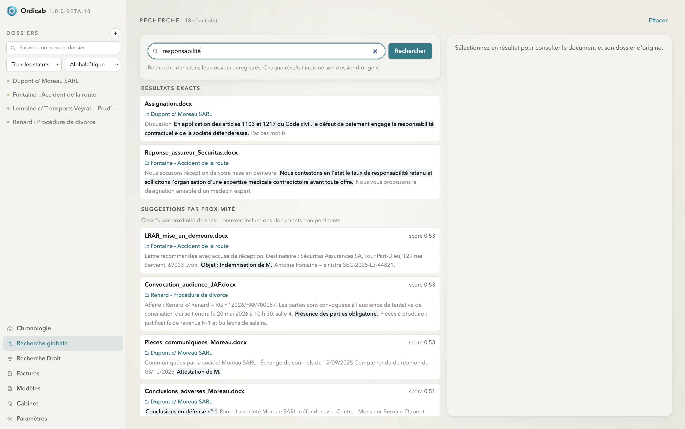
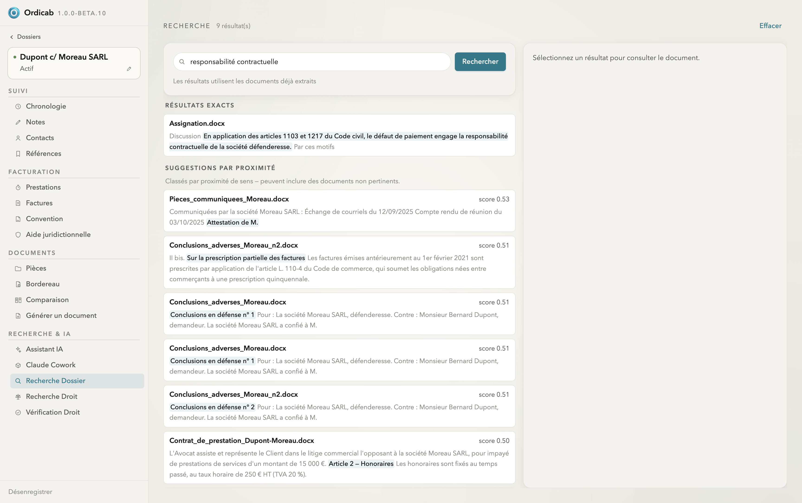
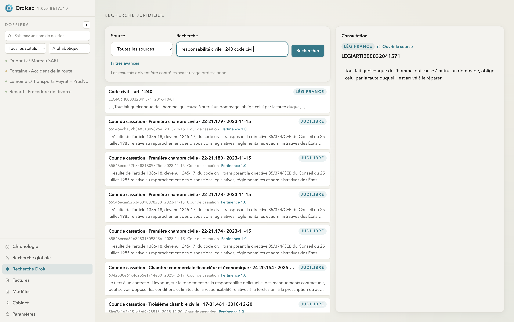
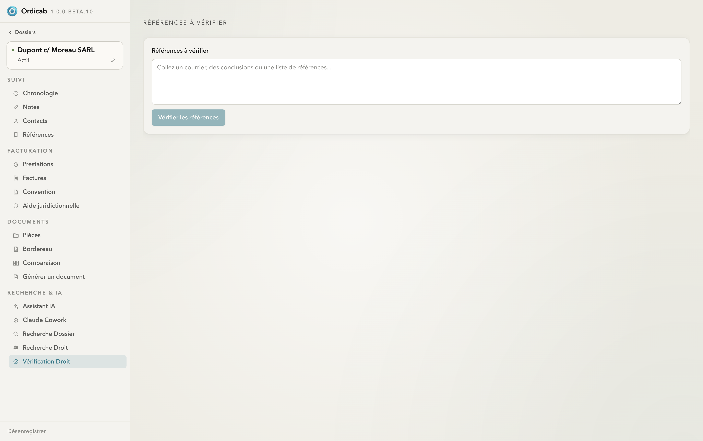

Recherche & vérification
Ordicab propose trois moteurs complémentaires : une recherche hybride dans vos propres documents, une recherche dans le droit (Légifrance, Judilibre), et une vérification automatique des références citées dans un écrit.
Recherche globale
La Recherche globale interroge tous vos dossiers enregistrés. Elle combine correspondance exacte et proximité sémantique : les résultats exacts remontent les passages contenant vos termes, et les suggestions par proximité retrouvent des documents pertinents même formulés autrement (avec un score). Chaque résultat indique son dossier d'origine.

Recherche globale — résultats exacts et suggestions par proximité, à travers tous les dossiers
Recherche Dossier
La même recherche hybride, mais limitée au dossier ouvert. Idéale pour retrouver une clause, une date ou un montant dans les pièces déjà extraites de l'affaire en cours.

Recherche Dossier — recherche hybride limitée au dossier en cours
Recherche juridique
La Recherche Droit interroge les sources officielles via PISTE : Légifrance (codes, articles) et Judilibre (jurisprudence). Sélectionnez la source, lancez la recherche, puis ouvrez un résultat pour consulter son texte intégral dans le panneau de droite, avec un lien vers la source.

Recherche juridique — article du Code civil et décisions de la Cour de cassation, avec consultation à droite
Vérification Droit
Collez un courrier, des conclusions ou une liste de références : la Vérification Droit repère les citations (articles, décisions) et les contrôle face aux sources officielles. Un bon réflexe avant d'envoyer un écrit qui s'appuie sur des références.

Vérification Droit — contrôle des références citées dans un écrit
Suivant : Intelligence artificielle →